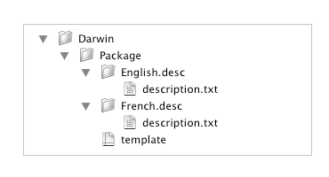

Lorsque vous créez un nouveau projet, Iceberg vous permet de choisir un modèle de projet parmi une liste de modèles prédéfinis.
Ce document décrit comment ajouter ses propres modèles de projet.
Emplacement des modèles de projetLes modèles de projet doivent être situés dans le dossier suivant :
|
Par défaut, Iceberg propose les modèles de projet suivants :
/Library/PreferencePanes/./Library/Application Support/Backup/QuickPicks/./Library/Screen Savers/./Library/Spotlight/.
Un modèle de projet est globalement un fichier de type Property List qui décrit l'ensemble des réglages par défaut qu'aura le projet
une fois créé.
| 1 | Créez une nouvelle fenêtre dans le Finder. | ||
| 2 | Choisissez Aller > Aller au dossier… . | ||
| 3 | Tapez le chemin /Library/Application Support/Iceberg/Projects Templates dans le champ texte et cliquez sur Aller. | ||
| 4 | Choisissez Fichier > Nouveau dossier et
saisissez comme nom de dossier MyTemplates pour créer une catégorie distincte de modèles.
| ||
| 5 | À l'intérieur de ce dossier, créez un nouveau dossier et saisissez comme nom de dossier celui sous lequel le modèle devra apparaître dans Iceberg. | ||
| 6 | À l'aide d'un éditeur de texte, créez un fichier
nommé template.packproj.
| ||
| 7 | Complètez ce fichier en utilisant le format des
projets Iceberg défini dans le document Format des documents Iceberg.
| ||
| 8 | À l'intérieur du dossier du modèle de projet, créez un
dossier pour chaque langue dans laquelle une description du projet sera disponible. La description d'un modèle de projet est affichée
dans l'assistant de création des projets.
| ||
| 9 | Placez dans chaque dossier le fichier texte localisé de la description du modèle. Ce fichier devra se nommer description.txt. |
La hiérarchie finale des fichiers d'un modèle de projet doit ressembler à ceci :

| ||||||||||||||||||||||||||||||||||||||||